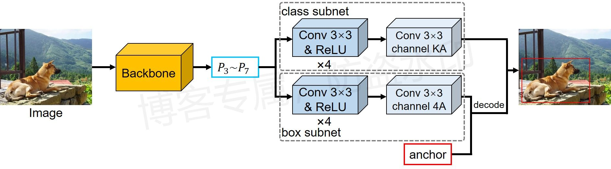
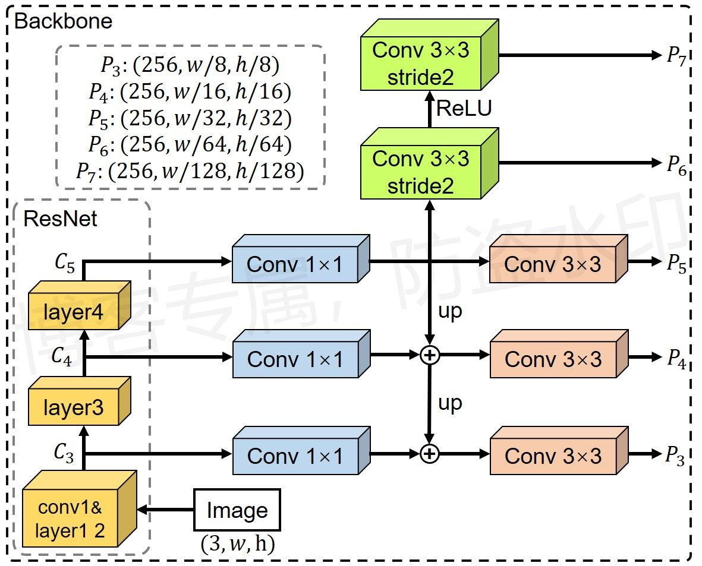

目标检测——RetinaNet¶
综述¶
会议时间：IEEE International Conference on Computer Vision 2017 (ICCV, 2017)
论文地址：https://openaccess.thecvf.com/content_ICCV_2017/papers/Lin_Focal_Loss_for_ICCV_2017_paper.pdf
类型：单阶段目标检测（one-stage）
介绍¶
网络结构图¶

其中，Backbone如下图所示：

流程图原创，使用请告知
细节¶
网络结构
- P_3到P_7锚点的原始尺度(scale)依次为：\{32、64、128、256、512\}，并且在原尺度基础上，再添加倍数为2^{\frac13}、2^{\frac23}的两个尺度，因此，每组预测特征会对应三种尺度，可以表示为((32, 40, 50), (64, 80, 101), (128, 161, 203), (256, 322, 406), (512, 645, 812))，每个尺度均分配3种比例(ratio)：\{1:2、1:1、2:1\}，因此综上所述，每组预测特征会对应9组锚点（一个特征点对应9个锚点）；
- Backbone采用FPN的网络结构，所有预测特征的通道数为256；
- 在预测回归参数时，执行类别不可知的预测，即每个锚点只输出1组回归参数（对比Faster R-CNN中，每个锚点输出K组回归参数，K为类别数量）；
- 在预测子网络中，特征会经过4次卷积和ReLU运算提取特征，之后利用卷积核尺寸为3\times3的卷积层来预测类别和回归参数（对比Faster R-CNN中，使用卷积核为1\times1的卷积运算预测）；
- 在预测物体类别时，不单独预测背景概率，即每个锚点输出K个数值（对比Faster R-CNN输出K+1个数值）。
训练阶段
- 在锚点匹配中，与物体边界框IOU值大于等于0.5的锚点设置为前景锚点、IOU值小于0.4的设置为背景锚点、舍弃介于0.4到0.5（[0.4,0.5)）之间的锚点；
- 由于分类损失采用焦点损失，因此默认采用所有锚点参与训练；
- 训练分类器时，利用焦点损失训练，焦点损失基于二元交叉熵损失而来，因此对每个锚点，计算K次焦点损失（每个类别一次）；
- 训练回归器时，利用l_1损失训练。
测试阶段
- 测试步骤：移除预测概率低的锚点→按概率选取前N_1个预测边界→执行NMS运算→按概率选取前N_2个预测边界作为最终的网络预测结果；
- 默认值：低概率0.05，N_1为1000，NMS阈值0.5，N_2为100；
- 对于每个锚点，如果有多个预测概率较大，则取预测概率中最大值的序号作为当前锚点的预测类别，不会出现单锚点多类别的情况（利用NMS过滤，重合的边界框会被过滤掉）；
- 在计算NMS时，会先对每个边界框加一个类别偏移量，保证不同类别之间不会重合。
代码实现¶
代码参考：
- https://github.com/WZMIAOMIAO/deep-learning-for-image-processing
- https://github.com/pytorch/vision/tree/master/torchvision/models/detection
网络结构¶
参数意义：
backbone：主干特征提取网络num_classes：物体类别数量min_size、max_size：图像最大边长与最小边长image_mean、image_std：预处理时，标准化用到的均值方差anchor_generator：为锚点生成器，用于在特征图上生成锚点图head：预测分支，用于预测锚点类别和边界框回归参数proposal_matcher：用于对锚点做划分，根据锚点与边界框的IOU值划分该锚点是正样本还是负样本score_thresh：测试时用到的阈值，小于该阈值的预测视为背景nms_thresh：NMS处理时用到的阈值detection_per_image：测试时，每张图片最多预测的物体数量fg_iou_thresh和bg_iou_thresh：训练时用于判定该锚点属于前景还是背景的阈值，iou大于前者，将该锚点视为前景锚点，iou小于后者，将该锚点视为背景topk_candidates：测试时，在NMS之前，每个特征层最多取前topk_candidates个前景锚点
class RetinaNet(nn.Module):
"""
Implements RetinaNet.
The input to the model is expected to be a list of tensors, each of shape [C, H, W], one for each
image, and should be in 0-1 range. Different images can have different sizes.
The behavior of the model changes depending if it is in training or evaluation mode.
During training, the model expects both the input tensors, as well as a targets (list of dictionary),
containing:
- boxes (``FloatTensor[N, 4]``): the ground-truth boxes in ``[x1, y1, x2, y2]`` format, with
``0 <= x1 < x2 <= W`` and ``0 <= y1 < y2 <= H``.
- labels (Int64Tensor[N]): the class label for each ground-truth box
The model returns a Dict[Tensor] during training, containing the classification and regression
losses.
During inference, the model requires only the input tensors, and returns the post-processed
predictions as a List[Dict[Tensor]], one for each input image. The fields of the Dict are as
follows:
- boxes (``FloatTensor[N, 4]``): the predicted boxes in ``[x1, y1, x2, y2]`` format, with
``0 <= x1 < x2 <= W`` and ``0 <= y1 < y2 <= H``.
- labels (Int64Tensor[N]): the predicted labels for each image
- scores (Tensor[N]): the scores for each prediction
"""
__annotations__ = {
'box_coder': det_utils.BoxCoder,
'proposal_matcher': det_utils.Matcher,
}
def __init__(self, backbone, num_classes,
# transform parameters
min_size=800, max_size=1333,
image_mean=None, image_std=None,
# Anchor parameters
anchor_generator=None, head=None,
proposal_matcher=None,
score_thresh=0.05,
nms_thresh=0.5,
detections_per_img=100,
fg_iou_thresh=0.5, bg_iou_thresh=0.4,
topk_candidates=1000):
super(RetinaNet, self).__init__()
if not hasattr(backbone, "out_channels"):
raise ValueError(
"backbone should contain an attribute out_channels "
"specifying the number of output channels (assumed to be the "
"same for all the levels)"
)
self.backbone = backbone
assert isinstance(anchor_generator, (AnchorsGenerator, type(None)))
if anchor_generator is None:
# 原论文中说在每个预测特征层上除了使用给定的尺度x外，还要额外添加x*2^(1/3)和x*2^(2/3)这两个尺度
# 五个预测特征层采用的原始尺度分别为32， 64， 128， 256， 512
# 注意尺度和面积的关系，面积=尺度^2
anchor_sizes = tuple((x, int(x * 2 ** (1.0 / 3)), int(x * 2 ** (2.0 / 3)))
for x in [32, 64, 128, 256, 512])
# 对于每个预测特征层上anchors，都会使用三种比例
aspect_ratios = ((0.5, 1.0, 2.0),) * len(anchor_sizes)
anchor_generator = AnchorsGenerator(anchor_sizes, aspect_ratios)
self.anchor_generator = anchor_generator
# 定义头部的预测层，即预测每个锚点的类别和回归参数
if head is None:
head = RetinaNetHead(backbone.out_channels, # in_channels
anchor_generator.num_anchors_per_location()[0], # num_anchors
num_classes) # num_classes
self.head = head
# proposal_matcher用于对锚点做划分，根据锚点与边界框的IOU值划分该锚点是正样本还是负样本
if proposal_matcher is None:
proposal_matcher = det_utils.Matcher(
fg_iou_thresh,
bg_iou_thresh,
allow_low_quality_matches=True
)
self.proposal_matcher = proposal_matcher
# box_coder用于编码运算，结合锚点与对应的边界框，计算二者之间的回归参数
self.box_coder = det_utils.BoxCoder(weights=(1.0, 1.0, 1.0, 1.0))
# 用于图像预处理的均值方差
if image_mean is None:
image_mean = [0.485, 0.456, 0.406]
if image_std is None:
image_std = [0.229, 0.224, 0.225]
# 定义图像预处理过程，包括输入图像的最小边长范围、最大边长范围以及图像标准化时用到的均值方差
self.transform = GeneralizedRCNNTransform(min_size, max_size, image_mean, image_std)
self.score_thresh = score_thresh
self.nms_thresh = nms_thresh
self.detections_per_img = detections_per_img
self.topk_candidates = topk_candidates
# used only on torchscript mode
self._has_warned = False
def forward(self, images, targets=None):
# type: (List[Tensor], Optional[List[Dict[str, Tensor]]]) -> Tuple[Dict[str, Tensor], List[Dict[str, Tensor]]]
"""
Args:
images (list[Tensor]): images to be processed
targets (list[Dict[Tensor]]): ground-truth boxes present in the image (optional)
Returns:
result (list[BoxList] or dict[Tensor]): the output from the model.
During training, it returns a dict[Tensor] which contains the losses.
During testing, it returns list[BoxList] contains additional fields
like `scores`, `labels` and `mask` (for Mask R-CNN models).
"""
if self.training and targets is None:
raise ValueError("In training mode, targets should be passed")
if self.training:
assert targets is not None
# 检查标签信息
for target in targets:
boxes = target["boxes"]
if isinstance(boxes, torch.Tensor):
if len(boxes.shape) != 2 or boxes.shape[-1] != 4:
raise ValueError("Expected target boxes to be a tensor"
"of shape [N, 4], got {:}.".format(boxes.shape))
else:
raise ValueError("Expected target boxes to be of type "
"Tensor, got {:}.".format(type(boxes)))
# 得到原始图片的高宽尺寸，用于后续postprocess，做还原
original_img_sizes: List[Tuple[int, int]] = []
for img in images:
val = img.shape[-2:]
assert len(val) == 2
original_img_sizes.append((val[0], val[1])) # h, w
# 对输入数据做预处理，将图片打包成一个batch
images, targets = self.transform(images, targets)
# Check for degenerate boxes
# TODO: Move this to a function
# 检查标签边界框信息
if targets is not None:
for target_idx, target in enumerate(targets):
boxes = target["boxes"]
degenerate_boxes = boxes[:, 2:] <= boxes[:, :2]
if degenerate_boxes.any():
# print the first degenerate box
bb_idx = torch.where(degenerate_boxes.any(dim=1))[0][0]
degen_bb: List[float] = boxes[bb_idx].tolist()
raise ValueError("All bounding boxes should have positive height and width."
" Found invalid box {} for target at index {}."
.format(degen_bb, target_idx))
# get the features from the backbone
# 将图片传入主干网络提取特征，此时features为OrderedDict格式
# 键分别为：['0','1','2','p6','p7']，对应论文p3-p7
features = self.backbone(images.tensors)
if isinstance(features, torch.Tensor):
features = OrderedDict([("0", features)])
features = list(features.values())
# compute the retinanet heads outputs using the features
# 将得到的特征传入后续预测网络，预测每个锚点的类别和边界框回归参数
head_outputs = self.head(features)
# create the set of anchors
# 创造一组锚点，anchors为列表数据，里面每个元素为二维数据，
# 尺寸为[锚点总数，4]，锚点总数=参与预测的特征数据个数(由特征层尺寸求和得到)*每个特征上预设的锚点数量(比例数乘以尺度数)
# 第二维度表示每个锚点的坐标值
anchors = self.anchor_generator(images, features)
losses = {}
detections: List[Dict[str, Tensor]] = []
# 如果是训练阶段，则需要额外计算损失
if self.training:
assert targets is not None
# 传入标签、网络的预测值、锚点坐标，得到分类损失以及边界框回归损失
losses = self.compute_loss(targets, head_outputs, anchors)
# 如果是测试阶段，则需要将预测到的目标框
else:
# 得到每个特征层的特征图大小(锚点是基于特征图上每个特征数据而设置的)
num_anchors_per_level = [x.size(2) * x.size(3) for x in features]
HW = 0 # HW表示所有特征层上参与预测的特征总数
for v in num_anchors_per_level:
HW += v
HWA = head_outputs["cls_logits"].size(1)
# 预测总数除以特征总数得到每个特征上的锚点数量，这里默认9
A = HWA // HW
# num_anchors_per_level表示每个特征层上的锚点数量
num_anchors_per_level = [hw * A for hw in num_anchors_per_level]
# split outputs per level
# 将输出的预测值划分到每个特征层上，一共划分成五组，对应五个特征层上的预测
split_head_outputs: Dict[str, List[Tensor]] = {}
for k in head_outputs:
split_head_outputs[k] = list(head_outputs[k].split(num_anchors_per_level, dim=1))
# 对预设的所有锚点也做划分，和上面一样
split_anchors = [list(a.split(num_anchors_per_level)) for a in anchors]
# compute the detections
# 对预测结果做处理，移除低概率的目标，并且将结果传入nms删去重叠框，最后选取预测分数最大的前几个预测目标当做预测结果
detections = self.postprocess_detections(split_head_outputs, split_anchors, images.image_sizes)
# 对网络的预测结果进行后处理（主要将bboxes还原到原图像尺度上）
detections = self.transform.postprocess(detections, images.image_sizes, original_img_sizes)
if torch.jit.is_scripting():
if not self._has_warned:
warnings.warn("RetinaNet always returns a (Losses, Detections) tuple in scripting")
self._has_warned = True
return losses, detections
return self.eager_outputs(losses, detections)
主干特征提取网络¶
大体和FPN相同，只是extra_blocks变量不同，这里还多了两层步长为2的卷积，用于下采样，代码如下：
class LastLevelP6P7(ExtraFPNBlock):
"""
This module is used in RetinaNet to generate extra layers, P6 and P7.
"""
def __init__(self, in_channels: int, out_channels: int):
super(LastLevelP6P7, self).__init__()
# 输入in_channels和输出out_channels默认都是256
# 定义后两层卷积，利用步长为2的卷积运算分别做下采样处理，得到论文中的p6、p7
self.p6 = nn.Conv2d(in_channels, out_channels, 3, 2, 1)
self.p7 = nn.Conv2d(out_channels, out_channels, 3, 2, 1)
# 初始化模型参数
for module in [self.p6, self.p7]:
nn.init.kaiming_uniform_(module.weight, a=1)
nn.init.constant_(module.bias, 0)
self.use_P5 = in_channels == out_channels
def forward(self,
p: List[Tensor],
c: List[Tensor],
names: List[str]) -> Tuple[List[Tensor], List[str]]:
p5, c5 = p[-1], c[-1]
x = p5 if self.use_P5 else c5
# 第五层特征经过卷积层得到p6
p6 = self.p6(x)
# 再传入激活函数以及卷积层，得到p7
p7 = self.p7(F.relu(p6))
p.extend([p6, p7])
names.extend(["p6", "p7"])
return p, names
预测网络¶
和Faster R-CNN不同的是，这里针对预测特征采用更深的网络进行提取特征（四层卷积），以及利用卷积核尺寸为3×3的卷积运算做预测（Faster R-CNN用1×1的）
class RetinaNetHead(nn.Module):
"""
A regression and classification head for use in RetinaNet.
Args:
in_channels (int): number of channels of the input feature
num_anchors (int): number of anchors to be predicted
num_classes (int): number of classes to be predicted
"""
def __init__(self, in_channels, num_anchors, num_classes):
super(RetinaNetHead, self).__init__()
# 分类子网络，用于预测物体类别
self.classification_head = RetinaNetClassificationHead(in_channels, num_anchors, num_classes)
# 回归子网络，用于预测物体边界框回归参数
self.regression_head = RetinaNetRegressionHead(in_channels, num_anchors)
def compute_loss(self,
targets: List[Dict[str, Tensor]],
head_outputs: Dict[str, Tensor],
anchors: List[Tensor],
matched_idxs: List[Tensor]) -> Dict[str, Tensor]:
# 依次计算分类损失和回归损失，具体细节见对应的compute_loss方法
return {
"classification": self.classification_head.compute_loss(targets, head_outputs, matched_idxs),
"bbox_regression": self.regression_head.compute_loss(targets, head_outputs, anchors, matched_idxs)
}
def forward(self, x: List[Tensor]) -> Dict[str, Tensor]:
# 分别做预测，之后返回
return {
"cls_logits": self.classification_head(x),
"bbox_regression": self.regression_head(x)
}
分类子网络（class subnet）
# 分类子网络
class RetinaNetClassificationHead(nn.Module):
"""
A classification head for use in RetinaNet.
Args:
in_channels (int): number of channels of the input feature
num_anchors (int): number of anchors to be predicted
num_classes (int): number of classes to be predicted
"""
def __init__(self, in_channels, num_anchors, num_classes, prior_probability=0.01):
super(RetinaNetClassificationHead, self).__init__()
# class subnet是由四个3x3的卷积层(激活函数为ReLU) + 一个3x3的卷积层(分类器)
conv = []
for _ in range(4):
conv.append(nn.Conv2d(in_channels, in_channels, kernel_size=3, stride=1, padding=1))
conv.append(nn.ReLU(inplace=True))
self.conv = nn.Sequential(*conv)
# 分类器功能由3×3的卷积运算完成，输出通道数为锚点数A*类别数K
self.cls_logits = nn.Conv2d(in_channels, num_anchors * num_classes, kernel_size=3, stride=1, padding=1)
# initial weights
# 初始化网络参数
for layer in self.conv.children():
if isinstance(layer, nn.Conv2d):
torch.nn.init.normal_(layer.weight, std=0.01)
torch.nn.init.constant_(layer.bias, 0)
torch.nn.init.normal_(self.cls_logits.weight, std=0.01)
torch.nn.init.constant_(self.cls_logits.bias, -math.log((1 - prior_probability) / prior_probability))
# 分类数
self.num_classes = num_classes
# 每个特征数据上的锚点数，默认9个（尺度乘以比例，即3*3）
self.num_anchors = num_anchors
# iou在fg_iou_thresh和bg_iou_thresh之间的舍弃，编号设置为-2，用于筛选参与计算分类损失的样本
self.BETWEEN_THRESHOLDS = det_utils.Matcher.BETWEEN_THRESHOLDS
def compute_loss(self,
targets: List[Dict[str, Tensor]],
head_outputs: Dict[str, Tensor],
matched_idxs: List[Tensor]) -> Tensor:
# matched_idxs为锚点编号，利用锚点和前景标签之间的iou值做分配
# 大于等于0时表示前景区域，且数值为前景标签的序号(即，数值表示第几个前景)，根据匹配到的前景标签生成类别标签
# -1表示为背景区域，-2表示介于前景背景之间，训练时要舍去
losses = []
# 首先类别预测向量
cls_logits = head_outputs["cls_logits"]
# 按图片遍历，每张图单独计算损失
for targets_per_img, cls_logits_per_img, matched_idxs_per_img in zip(targets, cls_logits, matched_idxs):
# determine only the foreground
# 找出所有前景锚点，也就是编号大于等于0的锚点
foreground_idxs_per_img = torch.ge(matched_idxs_per_img, 0) # ge: >=
num_foreground = foreground_idxs_per_img.sum() # num_foreground前景数量，用于后续做除法，得到均值
# create the target classification
# 以独热编码的形式创建分类标签，首先初始化一个全零向量，尺寸和预测结果尺寸一样，[锚点数,类别数]
gt_classes_target = torch.zeros_like(cls_logits_per_img)
# 第一维度的foreground_idxs_per_img用于定位前景锚点
# 第二个维度用于定位该锚点的类别，将指定前景锚点的对应类别分量设置为1
# 如果该锚点是前景锚点，则该锚点对应的向量有一个数为1，其余为0,
# 若该锚点是背景锚点，则该锚点对应的向量全为0
gt_classes_target[
foreground_idxs_per_img,
targets_per_img["labels"][matched_idxs_per_img[foreground_idxs_per_img]]
] = 1.0
# find indices for which anchors should be ignored
# 忽略iou在[0.4, 0.5)之间的anchors
valid_idxs_per_img = torch.ne(matched_idxs_per_img, self.BETWEEN_THRESHOLDS) # ne: !=
# 利用焦点损失计算分类损失，具体计算过程见焦点损失模块
losses.append(sigmoid_focal_loss(
cls_logits_per_img[valid_idxs_per_img],
gt_classes_target[valid_idxs_per_img],
reduction="sum"
) / max(1, num_foreground)) # 注意这里除以的是正样本的个数
# 求和除以batch，返回损失均值
return _sum(losses) / len(targets)
def forward(self, x: Tensor) -> Tensor:
all_cls_logits = []
# 遍历每个预测特征层
for features in x: # 依次经过定义好的卷积层与预测层，得到类别预测结果
cls_logits = self.conv(features)
cls_logits = self.cls_logits(cls_logits)
# 调整预测结果的尺度，使其变为[N, HWA, K]，第二维度为锚点数量，第三维度表示类别
# Permute classification output from (N, A * K, H, W) to (N, HWA, K).
N, _, H, W = cls_logits.shape
cls_logits = cls_logits.view(N, -1, self.num_classes, H, W)
# [N, A, K, H, W] -> [N, H, W, A, K]
cls_logits = cls_logits.permute(0, 3, 4, 1, 2)
# [N, H, W, A, K] -> [N, HWA, K]
cls_logits = cls_logits.reshape(N, -1, self.num_classes)
all_cls_logits.append(cls_logits)
return torch.cat(all_cls_logits, dim=1)
回归子网络（box subnet）
# 回归子网络
class RetinaNetRegressionHead(nn.Module):
"""
A regression head for use in RetinaNet.
# 预测回归参数子网络
Args:
in_channels (int): number of channels of the input feature
num_anchors (int): number of anchors to be predicted
"""
__annotations__ = {
'box_coder': det_utils.BoxCoder,
}
def __init__(self, in_channels, num_anchors):
super(RetinaNetRegressionHead, self).__init__()
# box subnet是由四个3x3的卷积层(激活函数为ReLU) + 一个3x3的卷积层(边界框回归器)
# 和分类子网络一样，首先定义四层卷积+ReLU运算层
conv = []
for _ in range(4):
conv.append(nn.Conv2d(in_channels, in_channels, kernel_size=3, stride=1, padding=1))
conv.append(nn.ReLU(inplace=True))
self.conv = nn.Sequential(*conv)
# 定义预测边界框回归参数的运算层，由3*3的卷积运算完成，输出通道数为锚点数A*4
self.bbox_reg = nn.Conv2d(in_channels, num_anchors * 4, kernel_size=3, stride=1, padding=1)
# initial weights
# 初始化网络参数
for layer in self.conv.children():
if isinstance(layer, nn.Conv2d):
torch.nn.init.normal_(layer.weight, std=0.01)
torch.nn.init.zeros_(layer.bias)
# bbox_coder用于编码操作，将每个锚点所匹配到的边界框编码成回归参数，网络实际是根据锚点来预测边界框回归参数
self.bbox_coder = det_utils.BoxCoder(weights=(1.0, 1.0, 1.0, 1.0))
def compute_loss(self,
targets: List[Dict[str, Tensor]],
head_outputs: Dict[str, Tensor],
anchors: List[Tensor],
matched_idxs: List[Tensor]) -> Tensor:
losses = []
# 得到网络预测的边界框回归参数
bbox_regression = head_outputs["bbox_regression"]
for targets_per_img, bbox_regression_per_img, anchors_per_img, matched_idxs_per_img in \
zip(targets, bbox_regression, anchors, matched_idxs):
# determine only the foreground indices, ignore the rest
# 得到对应前景区域的锚点序号
foreground_idxs_per_img = torch.where(torch.ge(matched_idxs_per_img, 0))[0] # ge: >=
num_foreground = foreground_idxs_per_img.numel()
# select only the foreground boxes
# 只筛选出每个前景锚点匹配的边界框坐标、回归参数以及锚点坐标
matched_gt_boxes_per_img = targets_per_img["boxes"][matched_idxs_per_img[foreground_idxs_per_img]]
bbox_regression_per_img = bbox_regression_per_img[foreground_idxs_per_img, :]
anchors_per_img = anchors_per_img[foreground_idxs_per_img, :]
# compute the regression targets
# 对每个锚点所匹配的边界框坐标做编码（锚点坐标和边界框坐标编码），得到真实的回归参数(即标签)，用于计算损失
targets_regression = self.bbox_coder.encode_single(matched_gt_boxes_per_img, anchors_per_img)
# compute the box regression loss
# 计算预测的回归参数和真实的回归参数之间的l1损失
losses.append(torch.nn.functional.l1_loss(
bbox_regression_per_img,
targets_regression,
reduction="sum"
) / max(1, num_foreground))
return _sum(losses) / max(1, len(targets))
def forward(self, x: List[Tensor]) -> Tensor:
all_bbox_regression = []
# 遍历每个预测特征层
for features in x:
# 首先传入定义好的卷积层与预测层，预测回归参数
bbox_regression = self.conv(features)
bbox_regression = self.bbox_reg(bbox_regression)
# Permute bbox regression output from (N, 4 * A, H, W) to (N, HWA, 4).
# 和分类子网络一样，调整预测结果的尺寸，调整为[N, HWA, 4]
N, _, H, W = bbox_regression.shape
# [N, 4 * A, H, W] -> [N, A, 4, H, W]
bbox_regression = bbox_regression.view(N, -1, 4, H, W)
# [N, A, 4, H, W] -> [N, H, W, A, 4]
bbox_regression = bbox_regression.permute(0, 3, 4, 1, 2)
# [N, H, W, A, 4] -> [N, HWA, 4]
bbox_regression = bbox_regression.reshape(N, -1, 4)
all_bbox_regression.append(bbox_regression)
return torch.cat(all_bbox_regression, dim=1)
计算损失¶
def compute_loss(self, targets, head_outputs, anchors):
# type: (List[Dict[str, Tensor]], Dict[str, Tensor], List[Tensor]) -> Dict[str, Tensor]
matched_idxs = []
for anchors_per_img, targets_per_img in zip(anchors, targets):
# 如果targets中无前景对象，则忽略
if targets_per_img["boxes"].numel() == 0:
matched_idxs.append(torch.full((anchors_per_img.size(0),), -1, dtype=torch.int64))
continue
# 计算锚点和前景物体之间的iou值
match_quality_matrix = box_ops.box_iou(targets_per_img["boxes"], anchors_per_img)
# 利用得到的iou值对锚点做匹配确定序号，如果是该锚点属于背景区域，则序号为-1，无关区域则为-2
# 如果该锚点属于前景区域，则序号表示targets中前景物体的序号，便于后续指定锚点的类别标签
matched_idxs.append(self.proposal_matcher(match_quality_matrix))
# 计算损失，具体见head中的compute_loss
return self.head.compute_loss(targets, head_outputs, anchors, matched_idxs)
注：以上仅是笔者个人见解，若有错误，欢迎指正
初步完稿于：2023年1月26日